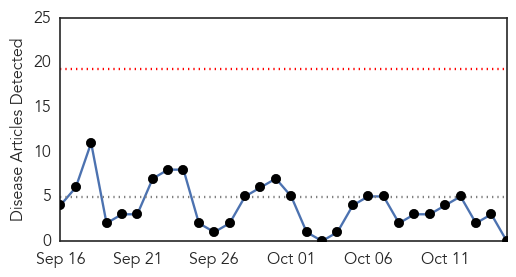
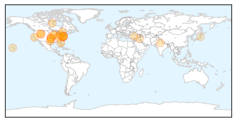

Meningitis
30-Day Web Trend
0 alerts, 0 warnings

30-Day Twitter Trend
Article Locations


Article Confidences

Top Articles:
-
No articles found for Oct 15, 2015
Top Tweets:
-
No tweets found for Oct 15, 2015
Influenza
30-Day Web Trend
8 alerts, 4 warnings

30-Day Twitter Trend
Article Locations
Article Confidences

Top Articles:
- 0.998
- The Cross Timbers Gazette
- 0.992
- Health experts: Get flu shots by Halloween
- 0.991
- 6 Reasons I Won’t Give My Kids The Nasal Flu Vaccine
- 0.990
- OSDH announces first confirmed cases of flu in Oklahoma for the 2015-2016 season
- 0.985
- The cold and flu may soon be What's Going Around
- 0.983
- Flu vaccines now available at 4 health department locations
- 0.972
- British Residents’ Society (BRS) offer advice on combating Influenza
- 0.971
- Health Unit cuts community flu clinics
- 0.971
- Oklahoma state Health Department confirms season's first cases of flu in Oklahoma
- 0.965
- Hey, Nice Shot! Fend Off the Flu at Free Clinic
- 0.915
- FluMist shortage delays, cancels school influenza clinics
- 0.898
- Today's stories from newspapers in Flamborough
- 0.896
- Vaccine shortage delays flu clinics at elementary and middle schools in county
- 0.889
- Driver calls in drunk on highway at Mattawa
- 0.875
- International Equine Disease Report, Second Quarter 2015
- 0.862
- News Scan for Oct 14, 2015
- 0.838
- Nasal spray shortage cancels, delays flu vaccine clinics
- 0.820
- JP Nadda Meets Delhi Health Minister To Review Preparedness For Influenza A H1N1
- 0.806
- Today's stories from newspapers in Caledon
- 0.762
- Stop Flu at School Program Gets Underway
- 0.751
- October 15, 2015 Archives
- 0.751
- October 15, 2015 Archives
- 0.751
- October 15, 2015 Archives
- 0.751
- October 15, 2015 Archives
- 0.751
- October 15, 2015 Archives
- 0.751
- October 14, 2015 Archives
- 0.715
- Flu vaccinations here Oct. 26
- 0.648
- Sendai virus defends against a threat
- 0.542
- Saskatchewan flu shots begin Monday
Top Tweets:
-
No tweets found for Oct 15, 2015